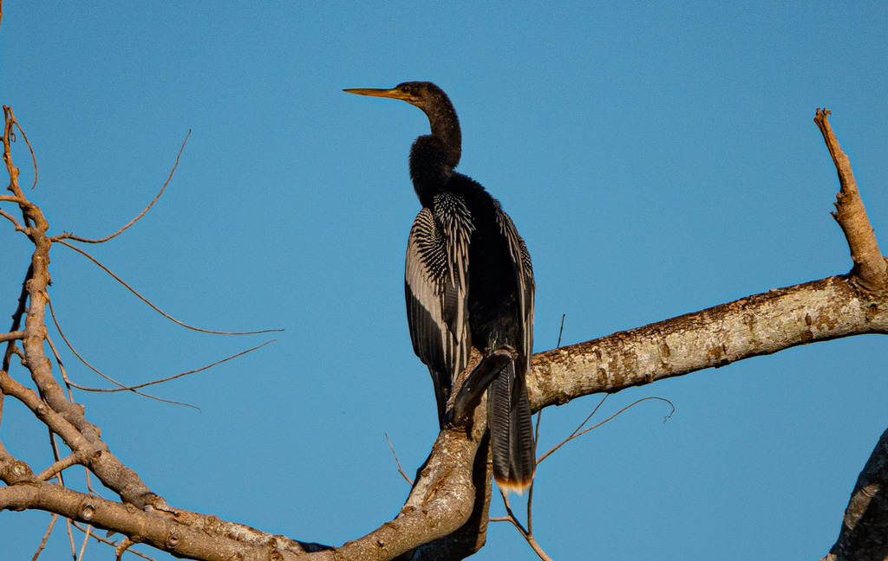

- Watch the water for a slim black bird swimming with only its snakelike neck above the surface — that is the anhinga, and the pose earns it the nickname snakebird.
- Unlike ducks, the anhinga's feathers are not waterproof, and that turns out to be the key to how it hunts.
- Waterlogged feathers make the bird less buoyant, so it can sink low and stalk fish beneath the surface instead of bobbing on top.
- Because it gets soaked to the skin, you will often see one afterward perched with its wings spread wide like a cape, drying out in the sun.
Long, straight, and sharply pointed — built for spearing, not grabbing.
Very long and thin, often the only part visible while swimming.
Males are glossy black with silver-white streaks on the wings; females and young have a pale tan head and neck.
Long and fan-shaped, longer than a cormorant's.
Usually silent. Around nesting colonies it makes clicking, rattling, and croaking sounds.
A long-necked black bird either swimming low with just its head and neck showing, or perched with wings fully spread to dry. Pale-necked birds are females and juveniles. Compared with the similar cormorant, the anhinga has a straight, pointed bill (the cormorant's is hooked) and a longer tail.
Mainly fish — larger ones speared on its sharp bill, smaller ones gripped in the serrated edges — plus the occasional aquatic invertebrate or small amphibian.
On and around the ponds. Scan the open water for a swimming snakebird, and check waterside branches, posts, and snags for one drying its wings in the sun.
Year-round resident. Often easiest to spot in the morning when birds are perched and drying their wings.
Enjoy from a distance and please do not feed it or any park wildlife. Give perched, wing-drying birds space — pushing one off its sunning spot makes it harder for the bird to warm up.


- © Rob Carr (CC-BY-NC), via iNaturalist
- © Mac Lewis (CC-BY-NC), via iNaturalist
- © Rhonda Olschefskie (CC-BY-NC), via iNaturalist